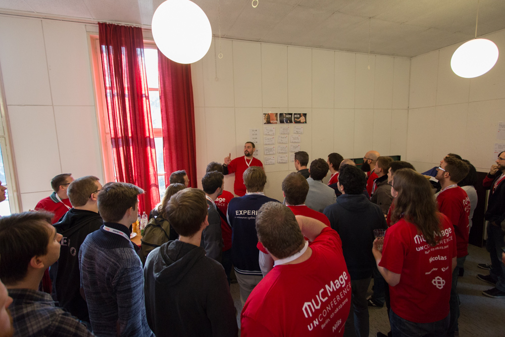

#mageuc16
The second Magento Unconference is here. Be part of this unique Magento community event!
#mageuc16 takes place in Berlin, 12th–13th March 2016
It's over now!
Whether you'd like to reminisce about memorable moments, recapitulate what you've learned during the sessions, or just find out what other attendees think of MageUnconference - these slides and blog posts will help you do just that.
Blog Posts
- Matthias Zeis 🇩🇪
- http://www.matthias-zeis.com/archiv/mage-unconference-2016-berlin
- Carmen Bremen (NeoShops) 🇩🇪
- http://neoshops.de/2016/03/17/resumee-magento-unconference-mageunconference-mageuc16-berlin/
- Firebear Studio 🇬🇧
- https://firebearstudio.com/blog/magento-unconference-2016-the-most-unique-magento-event.html
Slides
- …
- http://de.slideshare.net/gxjansen/team-data-building-an-optimization-dream-team
- …
- http://de.slideshare.net/SonjaRiesterer1/embracing-change-how-to-prepare-for-new-challenges
- …
- http://presentations.entwicklungshilfe.nrw/cleancode.html#/
- …
- http://presentations.entwicklungshilfe.nrw/codeception.html#/
Thanks to our sponsors
We'd like to say a special and loud "Thank You!" to our main sponsors, who decided to support the Magento community. They made it possible to have such a great event:

We'd also like to say "Thank you" to our sponsors supporting the after show party:
Friday
Our preparty starts at 19:00 and will be in Hopfingerbräu im Palais, Ebertstraße 24, 10117 Berlin. This is right at the Brandenburger Tor!
S-Bahnhof Brandenburger Tor: S1 / S2 / S25, Bus TXL / 200 / 100 / N2
Saturday
| Time/Room | Sherrie | Rhonda | Ben | Foyer |
|---|---|---|---|---|
| 10:00 - 10:30 | Breakfast | |||
| 10:30 - 12:00 | Morning session | |||
| 12:00 - 12:45 | The perfect Magento 2 setup for development | How can I dockerize my dev environment | Having 15 languages available on 15 websites | - |
| 12:45 - 13:15 | - | - | coffee break | |
| 13:15 - 14:00 | Deployment in Magento 2 | A/B testing for devs | Dynamic content with Varnish | - |
| 14:00 - 15:00 | - | - | - | lunch break |
| 15:00 - 15:45 | Fucking up projects | Magento 2 frontend workflow | Dependency injection | - |
| 15:45 - 16:15 | - | - | - | coffee break |
| 16:15 - 17:00 | Future of Magento 1 | Data modeling in Redis / Slicing Magento | How to train the next generation of Magento devs | - |
Our aftershow party starts at 18:00 at Sombrero, Wrangelstraße 11-12, 12165 Berlin-Steglitz. It's a half hour walk, you can go right through Botanischer Garten.
S-/U-Bahnhof Rathaus Steglitz: S1 / U9
Sunday
| Time/Room | Ben | Rhonda | Sherrie | Foyer |
|---|---|---|---|---|
| 9:00 - 9:30 | Breakfast | |||
| 9:30 - 10:30 | Morning session | |||
| 10:30 - 11:15 | The Art of Refactoring | We need a CMS - Content Creation in Magento | 23 1/2 Hour Developer | How do you flow, how do you feel? Approaches to efficient working |
| 11:15 - 11:45 | - | - | - | coffee break |
| 11:45 - 12:30 | Codeception | Why Contributing to Open Source is great | Future of Magento 1 - Part 2 | How do you do QA? Why should you do it? |
| 12:30 - 13:30 | - | - | - | lunch break |
| 13:30 - 14:15 | CleanCode | Team Growth - building your Webshop Optimization Team | Misc. Magento 2 Talks | How to use Scrum for Customers - PM Tools beyond Jira and Redmine |
| 14:15 - 14:45 | - | - | - | coffee break |
| 14:45 - 15:30 | Tax Configuration in M1/M2 | Embracing Change | Don't fear to talk Imposter anyone? | Working Remote - 37signals |
Why are there two types of tickets?
Both tickets enable you to attend the full conference with all benefits (wifi, food, drinks as well as party and t-shirts if sponsored). For individuals without any Magento business, we like to share the spirit of community by offering a standard ticket price. For companies and business based attendees we offer the supporter ticket. It's just fair to give something back to the community which makes your life a lot easier. The principle is easy: You earn money with Magento? You should buy a supporter ticket!
What is an unConference?
Someone said: “An unConference is all about people” and Judith Andresen, my UnConference mentor, said: “An unConference makes the coffee break a principle”. We have nothing further to add.
If you want to know more, here are the details. There are two important parts:
- There are no speakers. You decide what you want to hear about and you bring the content.
- We'll have a lot coffee breaks. More precisely, the plan is to have a 45min session, followed by a 30min coffee break.
No speakers
We meet in the morning, collect contributions (talks, workshops, tutorials or discussions you can give or moderate) and interests (things you'd like to hear about, learn or check out).
All topics are presented in a few sentences and we merge topics which are similar, so it may happen that two contributions end in one session and we have great discussions.
All attendees have two votes to give feedback on what they are interested in. The sessions with the most votes win and the time table is built from them.
Then you will have a great time in the sessions.
Coffee breaks
We'll take care of the time and bring you all together for 45 minutes, so you can discuss the session you've just attended, talk about problems or ideas you have about Magento, or just meet friends.
Our Motivation

Our Team Vinai, Rico, Fabian, Carmen and Tobias (not in the picture: Sonja and Pia)
A long time ago, two agencies started the idea of developing modules for the (German) magento community: FlagBit and ITABS. The idea was to give something back to the community, so FireGento was founded as a group of agencies and freelancers to develop open source modules. Today, we maintain one of the most important modules for the German market: FireGento MageSetup. We organize hackathons in Germany and Switzerland, and help other conference organizers around the world with hackathons. In addition, a lot modules were developed by our members or friends on hackathons - check them out.
Because two of our members are part of the PHP unConference Europe, we thought it's a good idea to do a Magento specific UnConference, since this format gives more room for discussion, knowledge transfer and networking than any other conference format that we know.
Team
A big thank you to our team. Rico Neitzel and Tobias Klose who take care of all the marketing stuff, website and paper stuff. Vinai Kopp, our connection to the community and our gofer. Sonja Riesterer and Carmen Bremen for their social media engagement and Pia Bodden as our proof reader of all texts. We'd also like to give a shout out to Fabian Blechschmidt, who takes care of the venue and all the local stuff in Berlin.
How can I become a sponsor?
If you like to sponsor the event, please choose your contact person:
Fabian Blechschmidt
Mobile: +49 170 4551981
eMail: blechschmidt@fabian-blechschmidt.de
Carmen Bremen
Mobile: +49 151 7000 7107
eMail: office@neoshops.de
Rico Neitzel
Phone: +49 931 46558373
eMail: info@buro71a.de

Location
For the second conference we have a new venue: Freie Universität Berlin – Institute für Informatik
Where is all that #mageuc15 content?
It has moved here.

Frequently Asked Questions
- What about vegetarian or vegan food?
- We will take care of your wishes and serve vegetarian or vegan alternatives for all meals. You can specify dietary needs at the ticket order.
- Can I resell my ticket?
- We will be very sad to not have you at MageUnconference but you're allowed to sell your ticket. Important note: Send us an email with your current registered name and the name of the new attendee. The conference's name tags will be printed a few days before the event. Please note that we cannot change the t-shirt size nor the printed name on the shirt as we already started to manufacture them. So you're spare buddy will get you t-shirt then.
Do you blog? Spread the word!
We need multiplicators to get that community idea into different channels. Do you blog? We'd love to see a post about the Mage Unconference on your blog! We are preparing a new Press Package, it will be here for download soon.